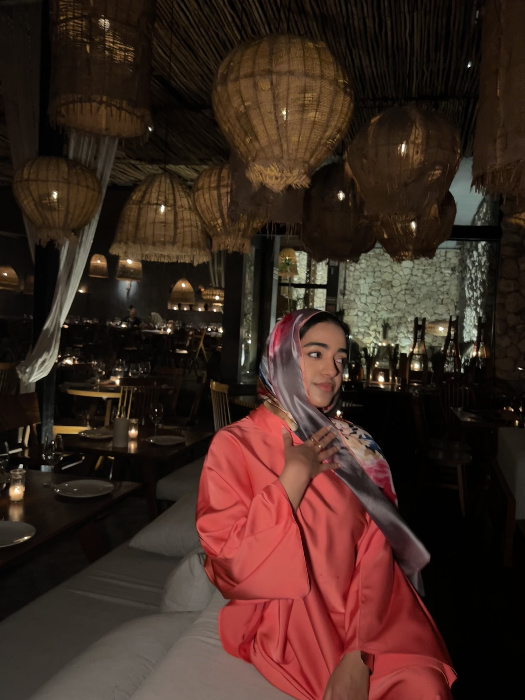
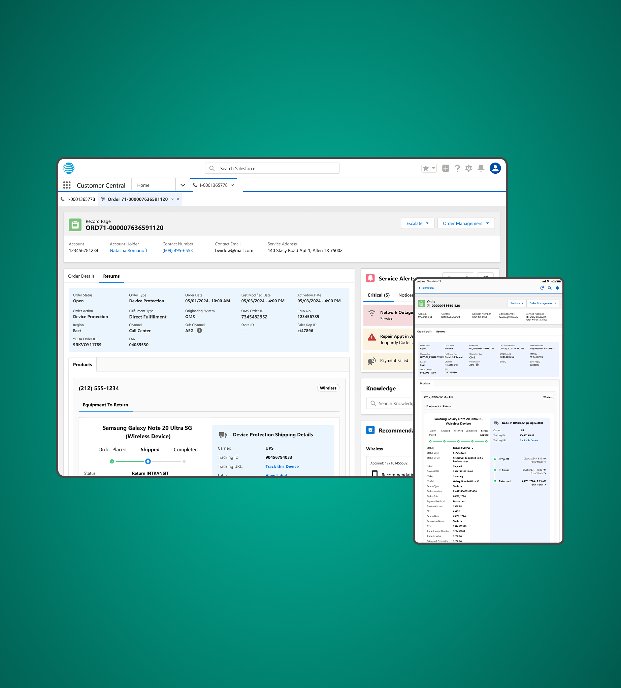
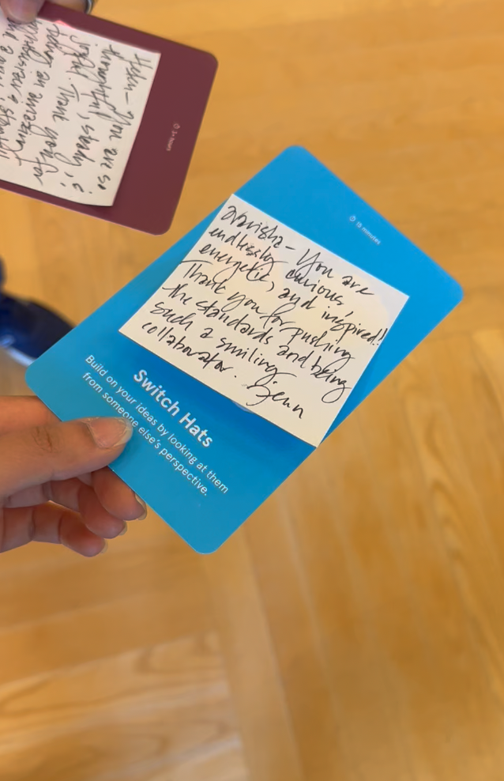
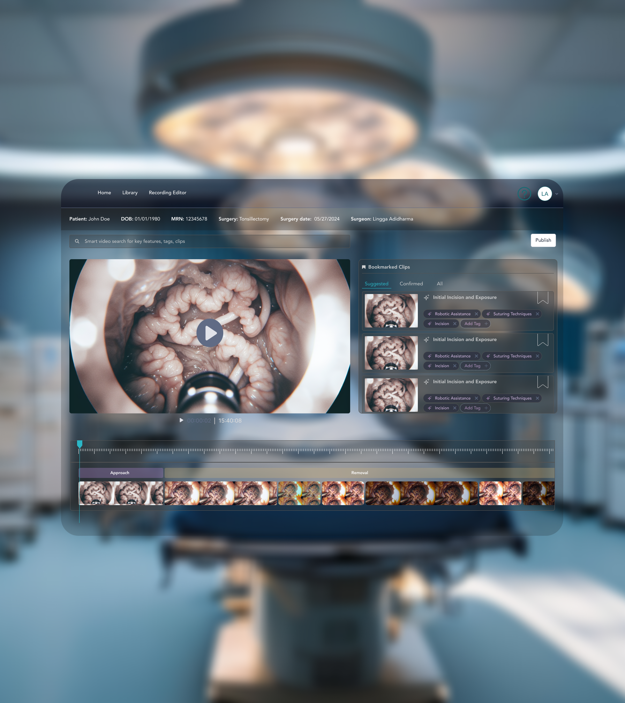
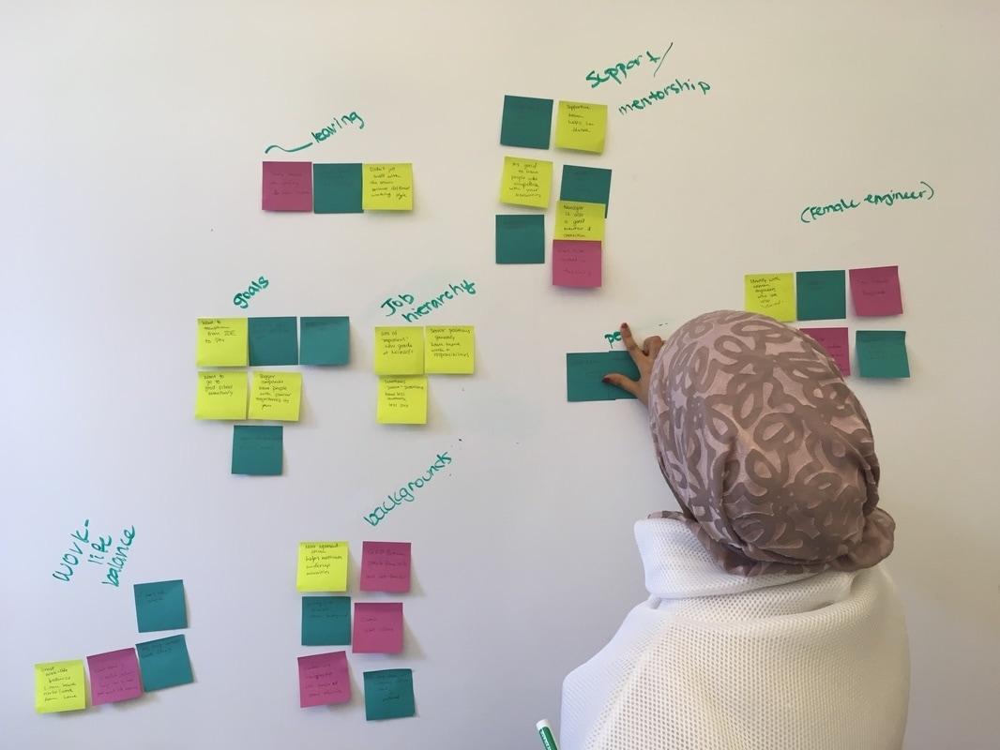

DESIGNING FOR THE MOMENTS TRUST CAN'T FAIL.
I work where regulation, trust, and complexity collide — understanding workflows to meet users where they are.
RETURN
JOURNEY
A journey-aware device return experience for call center agents and retail employees. This covers five use cases around the question: how does the agent keep track of a customer's device return?
YEAR: 2024–2025
View Case Study →
AMEND
In-place editing for live wireless orders at AT&T, designed around real backend limits — negotiated live with engineering rather than specified from a distance.
YEAR: 2026
View Case Study →
FCC-Mandate
One authentication model across four channels and every account, device, and failure state — built alone against an FCC deadline that didn't move
YEAR: 2024-2026
View Case Study →CHRONICLE
AI-assisted surgical video documentation, designed with a five-person team as a UW HCDE capstone — built around keeping the surgeon, not the algorithm, in control of the record.
YEAR: 2024
View Case Study →

DESIGN PHILOSOPHY
My goal is to craft a seemless experience. The more conversations on user journeys, painpoints, and technical contraints behind the scenes the more effortless the experience feels in front of our audience.